2. Mô hình ARIMA¶
2.1. Chuỗi thời gian dừng¶
Chuỗi thời gian dừng là yêu cầu bắt buộc để xây dựng mô hình ARIMA.
Định nghĩa chuối thời gian dừng:
- Giá trị trung bình không đổi theo thời gian
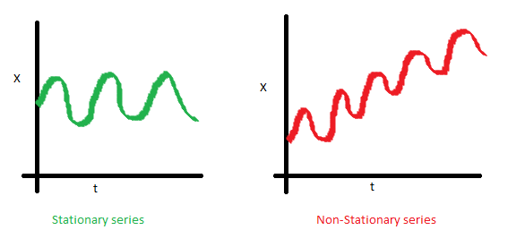
- Phương sai không đổi theo thời gian (homoskedaticity)
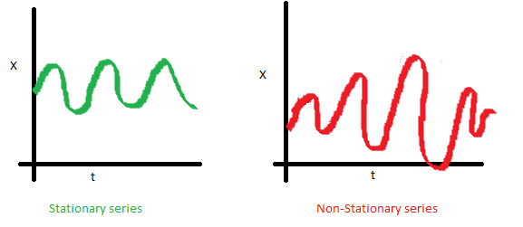
- Covariance của chuỗi thời gian thứ i và (i+m) không đổi
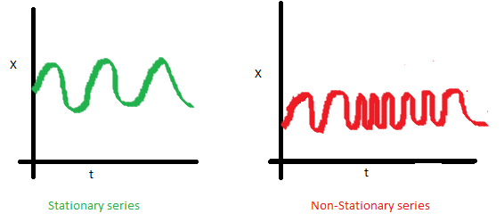
2.2. Mô hình ARIMA¶
ARIMA là viết tắt của Auto-Regressive Integrated Moving Average
\[ARIMA(p,d,q) = AR(p) + I(d) + MA(q)\]
Trong đó:
- p: Số bậc trong mô hình Auto-Regressive
- d: Số bậc trong mô hình Itegrated (số lần lấy \(\delta\) để có chuỗi thời gian dừng)
- q: Số bậc trong mô hình Moving Agerage
Integrated model
Gọi \(Y_1,...,Y_t\) là chuỗi thời gian gốc. Ta có:
- d=0: \(y_t=Y_t\)
- d=1: \(y_t=Y_t-Y_{t-1}\)
- d=2: \(y_t=(Y_t-Y_{t-1})-(Y_{t-1}-Y_{t-2})\)
Với d=2, còn được gọi là “the first difference of the first difference”. Sau khi được chuỗi dừng \(y_t\), ta có thể dự báo mô hình ARIMA như sau:
\[\hat{y}_t=\mu + \phi_1y_{t-1}+...+\phi_py_{t-p} + \theta_1\epsilon_{t-1}+...+\theta_q\epsilon_{t-q}\]
ACF vs. PACF
- ACF: Autocorrelation - đo correlation giữa các quan sát trong chuỗi
- PACF: Partial Auto Correlation - đo correlation giữa biến \(Y_t\) và \(Y_{t-k}\), loại bỏ các biến ở giữa chúng
Kỹ thuật tạo chuỗi dừng:
- Với biến có var biến đổi: log
- Với biến có mean biến đổi: Sử dụng “Difference”
Test chuỗi dừng: Test ADF (Augmented Dickey-Fuller)
- \(H_0\): Chuỗi không dừng (non-stationary)
- \(H_1\): Chuỗi dừng (stationary)
Lựa chọn tham số trong ARIMA
| Model | ACF | PACF |
|---|---|---|
| ARIMA(p,d,0) | Giảm dần đều về 0 | Giảm về 0 sau lag p |
| ARIMA(0,d,q) | Giảm về 0 sau lag q Giảm dần đều về 0 | |
| ARIMA(p,d,q) | Giảm dần đều về 0 | Giảm dần đều về 0 |
Xem xét ACF & PACF trong các chuỗi sau
library(forecast)
library(tseries)
library(dplyr)
library(ggfortify)
ar1 <- arima.sim(list(ar=c(0.89)), n = 100)
ar2 <- arima.sim(list(ar=c(0.89, -0.4858)), n = 100)
ma1 <- arima.sim(n = 100, list(ma = c(-0.2279)))
ma2 <- arima.sim(n = 100, list(ma = c(-0.2279, 0.2488)))
arma <- arima.sim(n = 100, list(ar = c(0.8897, -0.4858),
ma = c(-0.2279, 0.2488)))
#Tạo function
tseries.plot <- function(x){
par(mfrow=c(1,2));
Acf(x, col = "blue", main = paste(c("ACF plot")));
Pacf(x, col = "red", main = paste(c("PACF plot")));
}
purrr::map(list(ar1, ar2, ma1, ma2, arma), tseries.plot)
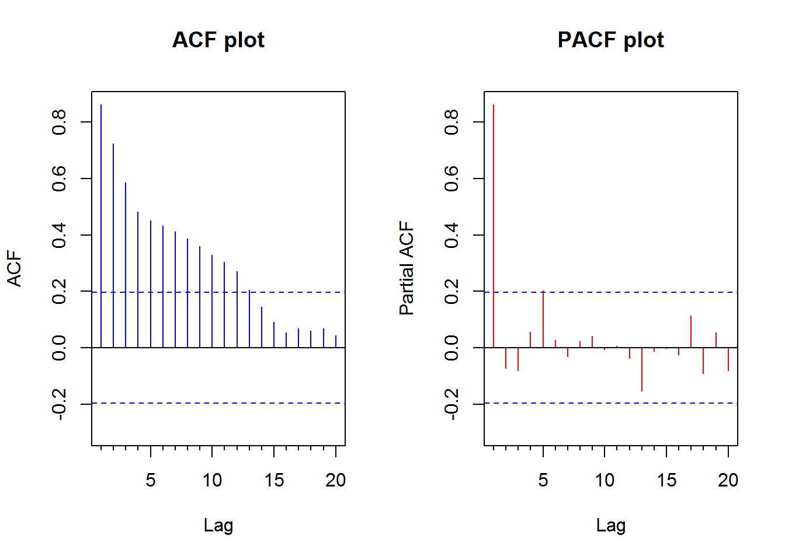
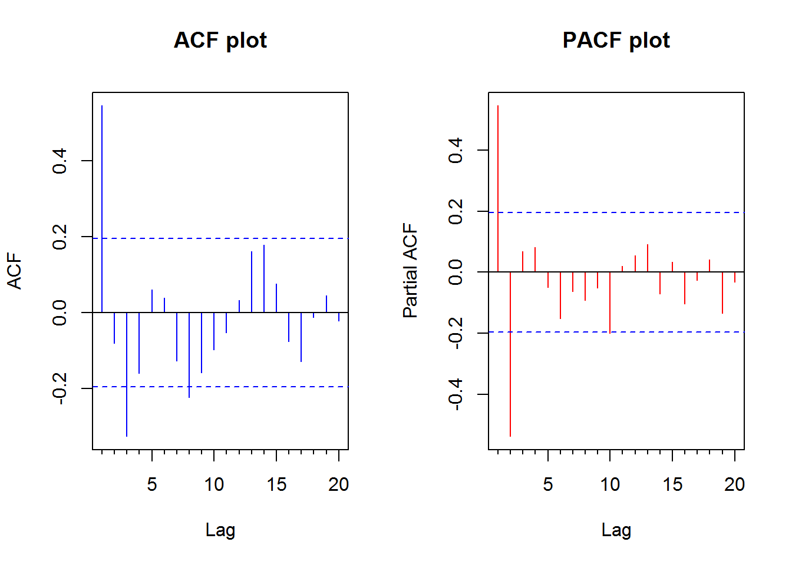
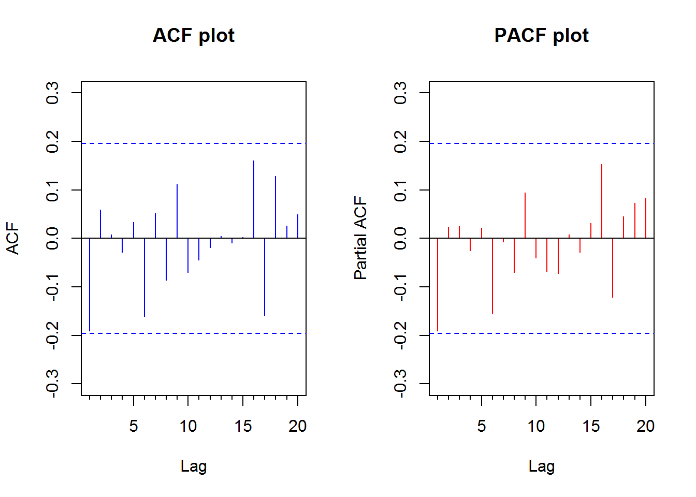
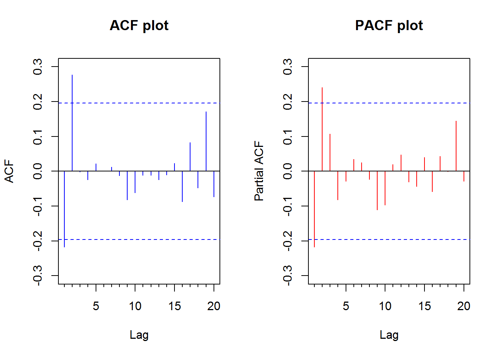
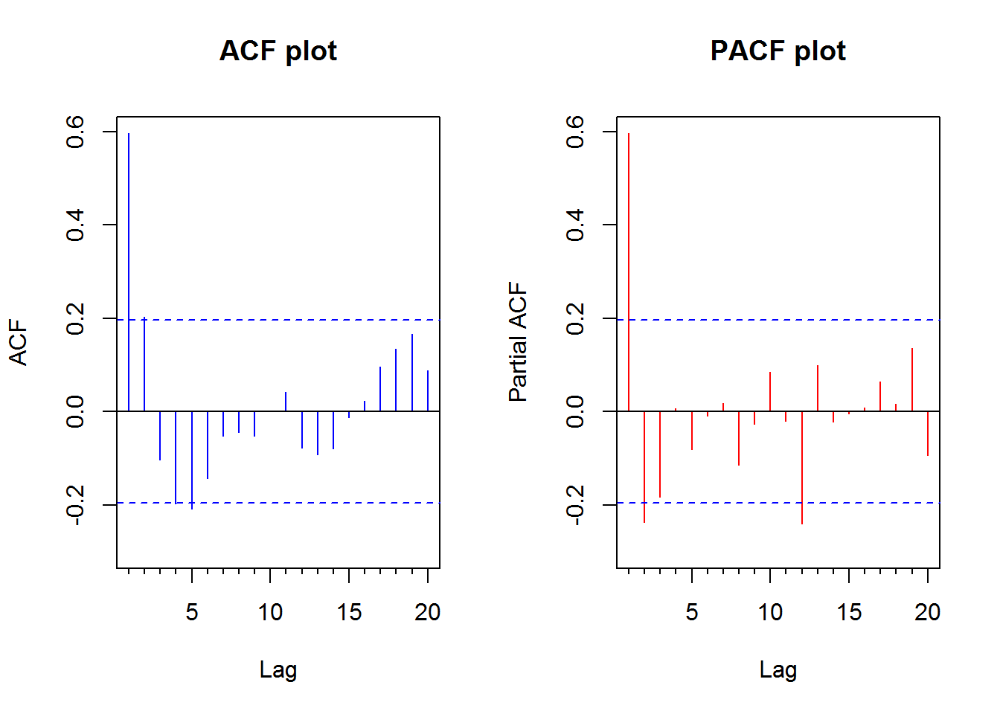
## [[1]]
##
## Partial autocorrelations of series 'x', by lag
##
## 1 2 3 4 5 6 7 8 9 10
## 0.861 -0.073 -0.080 0.055 0.202 0.027 -0.031 0.024 0.041 -0.005
## 11 12 13 14 15 16 17 18 19 20
## 0.007 -0.038 -0.153 -0.013 -0.003 -0.024 0.114 -0.091 0.053 -0.080
##
## [[2]]
##
## Partial autocorrelations of series 'x', by lag
##
## 1 2 3 4 5 6 7 8 9 10
## 0.545 -0.537 0.068 0.083 -0.049 -0.151 -0.063 -0.091 -0.052 -0.199
## 11 12 13 14 15 16 17 18 19 20
## 0.019 0.056 0.091 -0.070 0.033 -0.102 -0.026 0.042 -0.134 -0.032
##
## [[3]]
##
## Partial autocorrelations of series 'x', by lag
##
## 1 2 3 4 5 6 7 8 9 10
## -0.191 0.024 0.025 -0.025 0.022 -0.154 -0.007 -0.070 0.094 -0.040
## 11 12 13 14 15 16 17 18 19 20
## -0.068 -0.073 0.008 -0.029 0.031 0.153 -0.121 0.045 0.072 0.082
##
## [[4]]
##
## Partial autocorrelations of series 'x', by lag
##
## 1 2 3 4 5 6 7 8 9 10
## -0.218 0.241 0.107 -0.082 -0.029 0.034 0.025 -0.023 -0.110 -0.097
## 11 12 13 14 15 16 17 18 19 20
## 0.020 0.047 -0.031 -0.044 0.040 -0.059 0.043 -0.001 0.144 -0.029
##
## [[5]]
##
## Partial autocorrelations of series 'x', by lag
##
## 1 2 3 4 5 6 7 8 9 10
## 0.596 -0.238 -0.184 0.007 -0.081 -0.009 0.018 -0.115 -0.027 0.085
## 11 12 13 14 15 16 17 18 19 20
## -0.020 -0.240 0.099 -0.022 -0.005 0.008 0.065 0.016 0.136 -0.094
2.3. Ví dụ với R¶
library(forecast)
library(tseries)
plot(Nile)
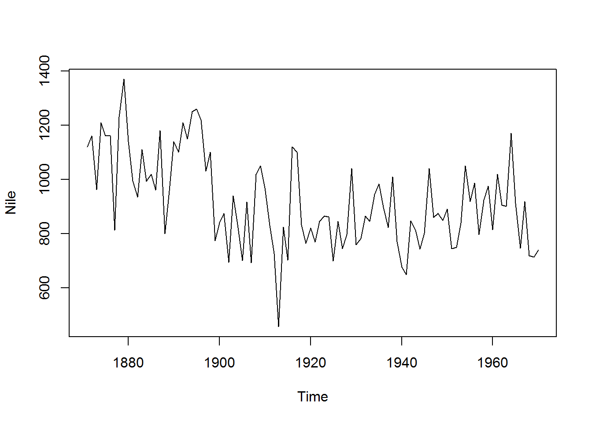
#Tìm giá trị tối ưu của d để loại trend
ndiffs(Nile)
## [1] 1
dNile <- diff(Nile, 1)
plot(dNile)
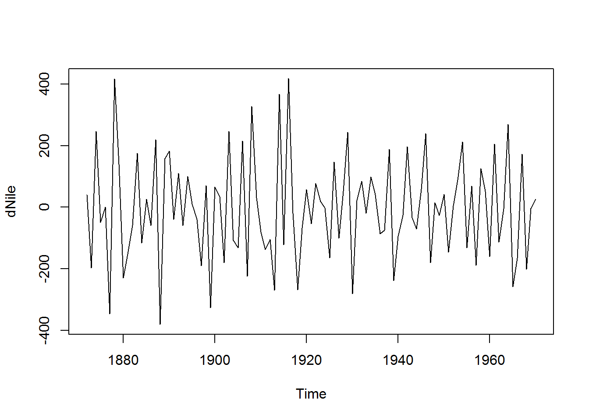
adf.test(dNile)
##
## Augmented Dickey-Fuller Test
##
## data: dNile
## Dickey-Fuller = -6.5924, Lag order = 4, p-value = 0.01
## alternative hypothesis: stationary
#Xem mô hình
par(mfrow=c(1,2))
Acf(dNile)
Pacf(dNile)
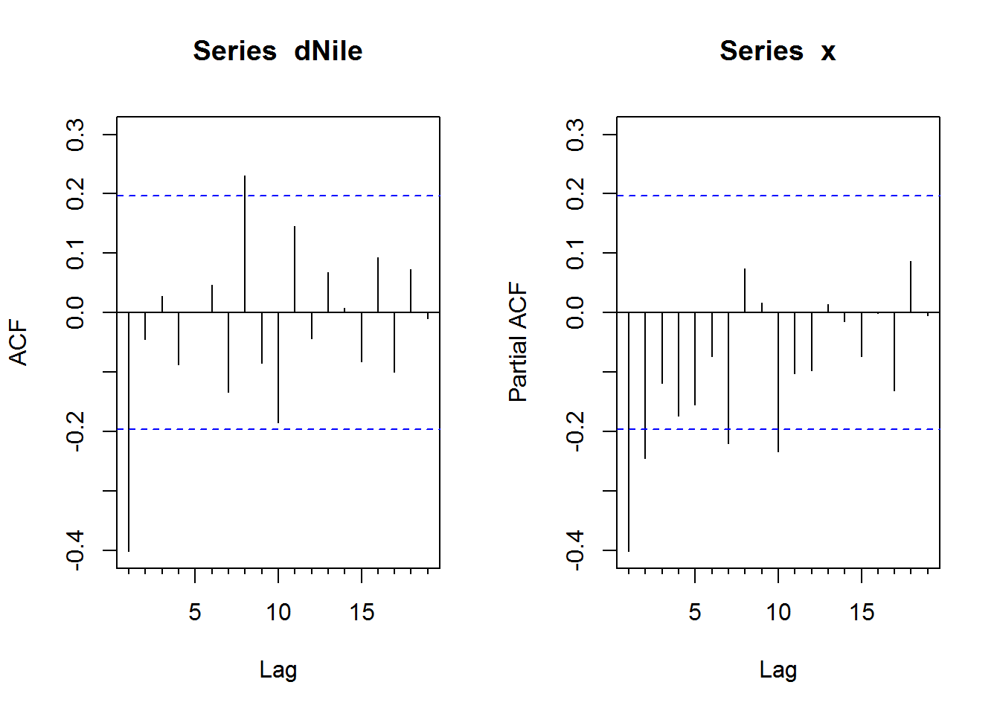
#ACF và PACF đưa ra gợi ý mô hình ARIMA(0,1,1): ACF giảm về 0 sau lag 1, PACF giảm dần về 0
fit <- arima(Nile, order = c(0,1,1))
fit
##
## Call:
## arima(x = Nile, order = c(0, 1, 1))
##
## Coefficients:
## ma1
## -0.7329
## s.e. 0.1143
##
## sigma^2 estimated as 20600: log likelihood = -632.55, aic = 1269.09
accuracy(fit)
## ME RMSE MAE MPE MAPE MASE
## Training set -11.9358 142.8071 112.1752 -3.574702 12.93594 0.841824
## ACF1
## Training set 0.1153593
#Đánh giá mô hình
par(mfrow=c(1,1))
names(fit)
## [1] "coef" "sigma2" "var.coef" "mask" "loglik"
## [6] "aic" "arma" "residuals" "call" "series"
## [11] "code" "n.cond" "nobs" "model"
qqnorm(fit$residuals)
qqline(fit$residuals)
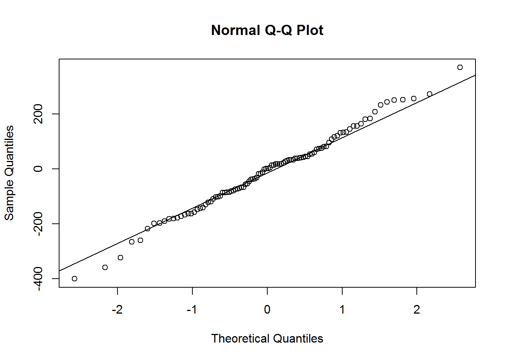
Box.test(fit$residuals, type = "Ljung-Box")
##
## Box-Ljung test
##
## data: fit$residuals
## X-squared = 1.3711, df = 1, p-value = 0.2416
#H0: Autocorrelation của residual bằng 0
#H1: Autocorrelation của residual khác 0
#Dự báo
forecast(fit, 3)
## Point Forecast Lo 80 Hi 80 Lo 95 Hi 95
## 1971 798.3673 614.4307 982.3040 517.0605 1079.674
## 1972 798.3673 607.9845 988.7502 507.2019 1089.533
## 1973 798.3673 601.7495 994.9851 497.6663 1099.068
autoplot(forecast(fit,3)) + theme_classic()

#Tự động chọn mô hình
auto.arima(Nile)
## Series: Nile
## ARIMA(1,1,1)
##
## Coefficients:
## ar1 ma1
## 0.2544 -0.8741
## s.e. 0.1194 0.0605
##
## sigma^2 estimated as 20177: log likelihood=-630.63
## AIC=1267.25 AICc=1267.51 BIC=1275.04
Mô hình trên cho thấy ARIMA(0,1,1) phản ánh tốt số lượng:
- Residual có phân phối chuẩn
- Residual có autocorrelation bằng 0 (p value > 0.24)